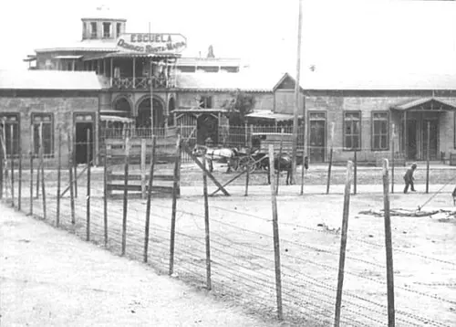

Matanza de la Escuela Santa María de Iquique

A fines de 1907, los trabajadores de las oficinas salitreras de Tarapacá iniciaron una huelga general y bajaron a Iquique para negociar con las autoridades y los empresarios. Sus demandas incluían el pago en dinero o en fichas canjeables a su valor, un tipo de cambio fijo para los salarios, libertad de comercio frente a las pulperías de las compañías y medidas de seguridad en las faenas. Miles de huelguistas y sus familias se concentraron en la Escuela Santa María y la plaza vecina.
El gobierno de Pedro Montt envió refuerzos militares. El 21 de diciembre, tras ordenar el desalojo, el general Roberto Silva Renard mandó disparar contra la multitud. El número de víctimas nunca se estableció con certeza: las cifras oficiales de la época fueron bajas y otras estimaciones son mucho mayores.
La matanza fue uno de los episodios más graves de represión obrera en la historia de Chile y un símbolo de La cuestión social y de La época del salitre. Durante décadas tuvo poco lugar en la historia oficial, pero se mantuvo en la memoria popular y del movimiento obrero. Hoy es reconocida y conmemorada en Iquique.
Versión para niños
En diciembre de 1907, miles de trabajadores del salitre bajaron de la pampa a Iquique con sus familias. Pedían cosas justas: que les pagaran con dinero y no con fichas, más seguridad en el trabajo y poder comprar donde quisieran. Se reunieron en la Escuela Santa María. El 21 de diciembre, las autoridades les ordenaron irse y, como no lo hicieron, los soldados dispararon. Murieron muchas personas, entre ellas mujeres y niños. Hoy se las recuerda con respeto.
Para maestros
Nivel sugerido: 1° medio
Objetivo: Analizar la Matanza de la Escuela Santa María de Iquique como expresión extrema de la cuestión social y reflexionar sobre la memoria de los hechos.
Preguntas para la clase:
- ¿Qué pedían los trabajadores y por qué esas demandas eran importantes para sus vidas?
- ¿Por qué el número de víctimas sigue siendo incierto?
- ¿Por qué durante mucho tiempo este hecho fue poco conocido y cómo se ha recuperado su memoria?
Actividad (20–30 min): Escucha de fragmentos de la Cantata Santa María de Iquique y lectura de una síntesis del pliego de peticiones de los huelguistas. Los estudiantes relacionan las demandas con los derechos laborales actuales y comentan cómo el arte ayuda a preservar la memoria. Se recomienda abordar el tema con respeto hacia las víctimas y sus familias.
Fuentes sugeridas: Memoria Chilena; Biblioteca Nacional Digital; Museo Histórico Nacional.
Objetivos de Aprendizaje (Currículum Nacional)
- 6° básico · HI06 OA 06 Caracterizar los principales aspectos que definieron el período de riqueza aportada por la explotación del salitre … el inicio de la "cuestión social"
- 1° medio · HI1M OA 18 Analizar las principales transformaciones de la sociedad en el cambio de siglo … las nuevas formas de lucha obrera
- 4° medio (Educación Ciudadana) · FG-ECIU-4M-OAC-04 Comprender la importancia de los derechos laborales en Chile … y los aportes de los movimientos y organizaciones sociales a su fortalecimiento
Revisión humana pendiente. Cómo se revisa · Reportar un error
Cómo citar: Historia de Chile. (2026). Matanza de la Escuela Santa María de Iquique. En Historia de Chile: atlas y línea de tiempo. https://moises-salgado.github.io/historia-de-chile/momento/matanza-de-la-escuela-santa-maria-de-iquique.html